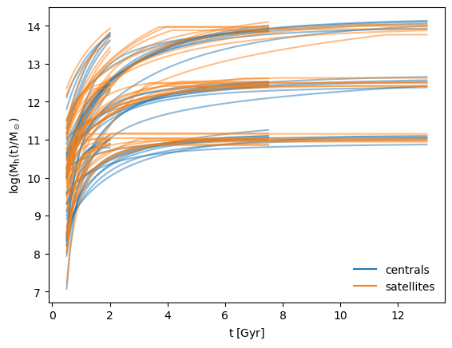
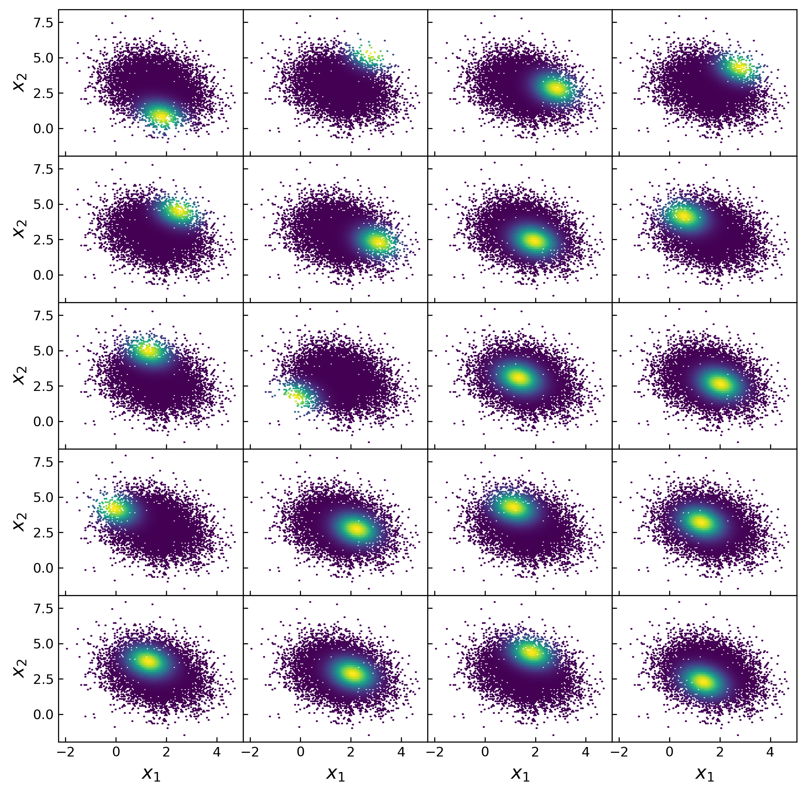
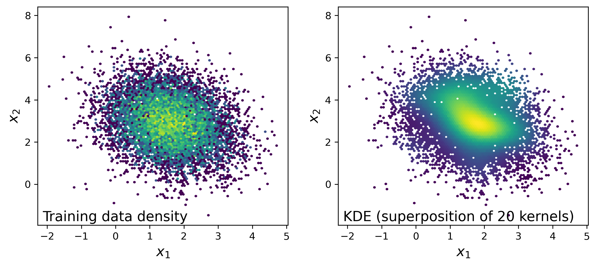

Curriculum Vitae
Links
Education
-
University of Pittsburgh
06/2023 - Ph.D. Physics
12/2018 - M.S. Physics
Rensselaer Polytechnic Institute
05/2017 - B.S. Physics

Postdoctoral Researcher
Cosmological Physics and Advanced Computing (CPAC) Group
Argonne National Laboratory
Contact me: alanpearl13@gmail.com
University of Pittsburgh
06/2023 - Ph.D. Physics
12/2018 - M.S. Physics
Rensselaer Polytechnic Institute
05/2017 - B.S. Physics
diffopt is a Python package that combines various tools and techniques for parallelizable parameter optimization, including gradient-based techniques powered by a parallel extension to Jax autodiff capabililties.
galtab is a key Python package that enabled much of the work in my PhD thesis by pretabulating galaxy placeholders to improve prediction efficiency of my Counts-in-Cylinders estimator.
JaxTabCorr is a Python package that integrates classes from TabCorr and halotools into a differentiable prediction framework made possible by Jax autodiff libraries.
mocksurvey is a Python package used for constructing mock galaxy catalogs and perform mock surveys seeded from the UniverseMachine empirical model.
I contribute to halotools, which is a Python package that provides a wide array of models of the galaxy-halo connection.
You can download my mock catalogs for PFS here (or here for the original May 2020 version).
During my postdoc at Argonne National Lab, I have worked on the optimization, parallelization, and development of machine learning components of a suite of galaxy-halo connection models within the diffsky ecosystem. A full diffsky model takes hundreds of parameter inputs and is used to make predictions and inferences about the statistical occurrences of physical galaxy formation processes.
Below, I describe just a couple of the key projects I have completed:
The diffmahnet package provides a framework and pretrained models for emulating diffmahpop—a crucial component of the diffsky ecosystem—which is a generative model of populations of halo mass accretion histories. I implemented this emulator using neural density estimation, which is a type of neural network that predicts distributions rather than point estimates. This is a useful technique for emulating the properties of any population that is not well-described by a simple parametric distribution. The diffmahnet package is built on top of JAX, using the flowjax library, which allows us to take advantage of GPU acceleration and automatic differentiation.
The pretrained models we provide have already shown to be very powerful, not only because they generate realistic halo mass accretion histories quicker than standard techniques, but also because they can be trivially extended to include cosmological dependence. To this end, in the near future, we will include additional training data from various simulations that span a range of cosmological parameters, so that the emulator can be used to generate realistic halo mass accretion histories for any cosmology. Since performing millions of simulations spanning many cosmologies is prohibitively expensive, diffmahnet will fundamentally enhance our ability to model the halo and galaxy populations in a wide range of cosmologies, enabling inference into the nature of dark matter and dark energy from a new class of observables.

Figure 1: Halo mass accretion histories (MAHs) generated by pretrained diffmahnet models for centrals (blue) and satellites (orange). Nine sets of populations are shown, each with a fixed tobs and Mh(tobs), distinguished by their ultimate values of t and Mh, but demonstrating the wide variance of accretion histories that can approach the same halo mass at the same time.
DiffOpt: Parallel optimization of Jax models
The diffopt package and accompanying JOSS publication aid the diffsky team and other developers of many-parameter JAX models by providing a framework for parallelizing the optimization of these models. The package is built on top of JAX, which allows us to take advantage of GPU acceleration and automatic differentiation. The package also includes a few custom implementations of optimization algorithms, which are very powerful for both diffopt and other many-parameter differentiable models, including neural networks. There are three primary subcomponents of the diffopt package, each of which I will describe below:
kdescent
Fitting a population model with many parameters to multi-dimensional demographics is a notoriously difficult machine learning problem. kdescent presents a flexible stochastic gradient descent solution. kdescent draws a very small, random "mini-batch" of the training data (n = 20 for this example) and constructs a kernel density estimation (KDE) of the distribution, using these 20 random kernel centers, as shown by the example below.

Figure 2: Each panel shows example training data, colored by a kernel weight. The kernel centers were chosen randomly from the training data. We adopt a Gaussian kernel with the Scott's rule bandwidth (stretched according to the inverse principle component transformation).

Figure 3: The left panel is colored by number density of the training data in small spatial bins. The right panel attempts to approximately reproduce the population distribution, while only knowing 20 points using KDE (basically just averaging the twenty kernels from above).
Now imagine we are modeling this population (for testing, we will simply populate samples from a 2D multivariate normal distribution, which means we are fitting 5-parameters: 2 means, 2 variances, and 1 correlation coefficient). Thanks to the JAX implementation of kdescent, we can fit these parameters using a gradient descent algorithm, such as Adam, defining the loss as the mean-squared error of the number density within each kernel. By re-drawing our kernels at each iteration, we are able to (a) fairly probe the training data and (b) avoid getting stuck in local minima. The animation below shows this 5-parameter fit in action.

Figure 4: Animation of 200 iterations of the Adam gradient descent algorithm, using the loss function described above. The left panel shows the parameters converging to their known true values. The right panel shows the model distribution moving, stretching, and rotating until it finally converges upon the correct distribution.
Parallel Gradients
The JAX Python library allows us to create extremely powerful, fast, differentiable models without requiring excessive development time. However, efficiently calculating a gradient in parallel is not trivial. This is a huge hurdle for big-data problems, where our data must be distributed across several nodes, and prevents us from taking advantage of the full processing power of each node. Therefore, I built a framework to simplify this process, and implemented it in the multigrad package. In brief, it works by allowing users to define functions that compute linear statistics that are summed over the data on each node. Not only are the resulting statistics computed automatically, but the chain rule is preserved by exploiting the vector-Jacobian product, allowing us to propagate the the derivatives to any desired loss function.

Figure 5: Subvolume division in which each partial gradient is computed before MPI combines everything with one simple addition reduction.
Particle Swarm Optimization
The greatest challenge posed to gradient descent is the risk of getting stuck in local minima. It is therefore necessary to start from a reasonable initial condition, either using analytic approximations or exploratory parameter scans. One of the most powerful methods to run an exploratory parameter scan is known as Particle Swarm Optimization (PSO), in which a set number of particles are initialized along a Latin Hypercube with randomized velocities and accelerate according to a cognitive weight (which pulls towards the best loss found by each particle) and a social weight (which pulls towards the best loss found by the entire swarm). I have built a PSO implementation, multiswarm, that hosts particles across various MPI tasks. Since PSO doesn't require gradient calculations, it is applicable to a wider range of models and has much lower memory requirements than differentiable methods, making it very fast and massively parallelizable.

Figure 6: A swarm of one hundred particles converging upon the global minimum of a 5-dimensional Ackley loss function. Taking all 5 dimensions into account, there are roughly 105 local minima, yet the swarm skillfully navigates closer and closer to the global minimum, reducing the search space as the particles slowly lose their momenta, until they arrive at the correct place.
Publications: See my papers on ADS
Postdoc at Argonne
I work closely with Andrew Hearin and others to develop models of the galaxy-halo connection, implemented with Python's JAX library to enable GPU acceleration and automatic differentiation. I am focusing on improving the scalability of our model to extremely large datasets by designing a framework that performs distributed parallel computation, while seamlessly preserving the advantages of JAX (powered by the data science projects listed above). I plan on utilizing this framework to make self-consistent mock observations on cosmological simulations, thereby minimizing biases in the joint inference of cosmology and galaxy formation physics.
PhD Thesis
Illuminating and Tabulating the Galaxy-Halo Connection
Part I: Illuminated the UniverseMachine to construct PFS mock catalogs
Using UniverseMachine as a model and UltraVISTA photometry as training data, I created a mock galaxy catalog specifically tailored to making predictions for the upcoming PFS survey. Using this mock, I published a paper which demonstrated that future extensions of the PFS survey should prioritize increasing the survey area to best improve scientific goals. This mock and the methods used to create it are publicly available.
Part II: Tabulated statistical estimators to be fast, precise, and differentiable
The galaxy-halo connection is typically analyzed via Markov-chain Monte Carlo (MCMC) sampling of parameter-space in order to place constraints on models. However, this process is slowed down by the stochastic nature of halo occupation distribution (HOD) models. I have improved the efficiency of this process with two open-source projects: